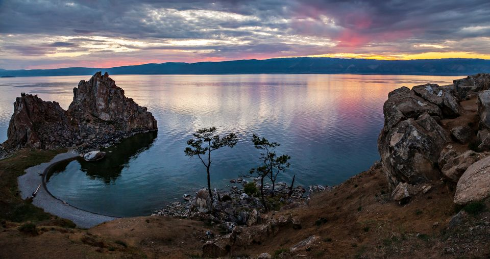
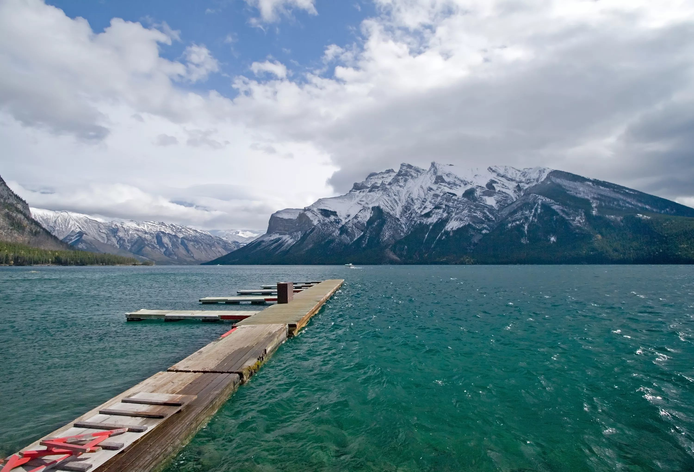
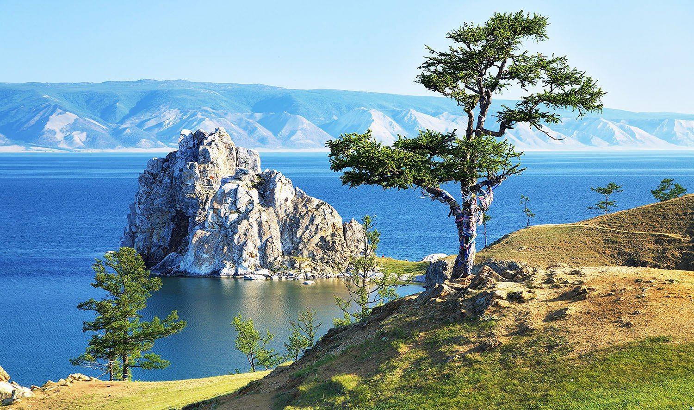
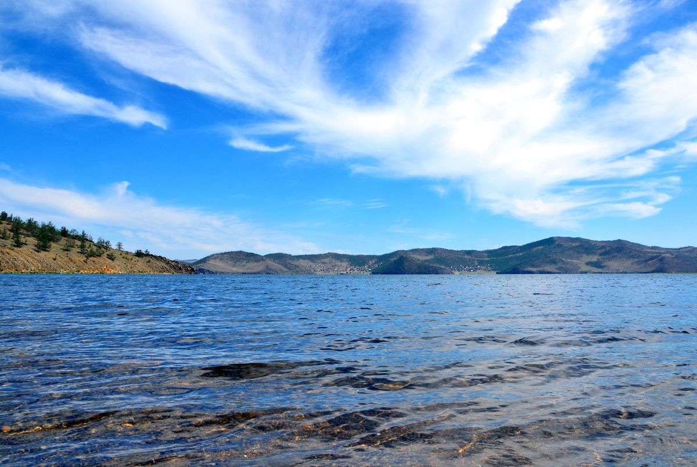

Байкал – самое глубокое озеро в мире. Его глубина составляет 1642 метра. Это целый мир, наслаждаться красотой которого можно снова и снова. И каждый раз Вы будете открывать для себя что-то новое в этом суровом и необыкновенном крае. Ведь за одну поездку невозможно повидать все уголки Священного озера и узнать обо всех его тайнах.
В Байкале содержится 1/5 всей пресной воды на Земле, обитает более 2600 видов животных и растений, более 1000 из которых – эндемики, в том числе байкальская нерпа, живородящая рыба голомянка и знаменитый омуль? Озеро, в которое впадает 336 рек, а вытекает лишь одна – река Ангара?
Нигде в мире вы не встретите такой чистой воды, которую можно зачерпнуть руками и выпить. Вкус байкальской воды поразит вас! Также как и ее прозрачность: если опустить на дно диск диаметром 30 см, его будет видно на глубине 43 метров! Весной и летом прозрачность может достигать 50 м.
Между островом Ольхон и западным берегом Байкала расположен пролив Малое море. Это одно из самых теплых мест на озере - летом вода здесь прогревается до +20 градусов. Красивые бухты, галечные пляжи, уникальные природные памятники, а также возможность отдохнуть с комфортом вблизи дикой природы – все это делает Малое море одним из самых популярных мест отдыха.
Отдыхать здесь можно круглый год. Байкал зимой особенно прекрасен: прозрачный лед, сверкающие на солнце торосы, причудливые ледяные скульптуры. Идеальное время для зимнего отдыха – конец февраля – начало апреля. Зимний Байкал предлагает огромное количество развлечений: катание на коньках, снегоходах, собачьих упряжках, велосипедах, джип-сафари и,конечно же, зимняя рыбалка.


